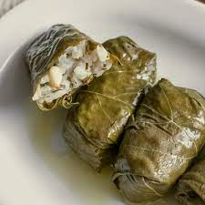

Grape leaves

The best way to prepare delicious grape leaves, or yeb'r't in Arabic,
as handed down by my grandmother from Aleppo, Syria as brought to the US in 1912.
- 1 cup uncooked white rice
- 2 pounds ground lamb
- 2 (16 ounce) jars grape leaves, drained and rinsed
- 1 teaspoon salt
- 1 teaspoon ground black peppert
- 1 tablespoon ground allspice
- 6 cloves garlic, sliced
- 1 cup lemon juice
- 2 kalamata olives (Optional)
Steps
- Soak rice in cold water, and drain. In a large bowl, mix together the ground lamb, rice, allspice, salt and pepper until well blended. Place about 1 tablespoon of the meat mixture onto the center of each leaf. Fold the leaf over once, turn in the edges on each side, and then roll the leaf closed.
- Stack the leaf-rolls in a large pot, covering each layer with slices of garlic. Add just enough water to cover the rolls, then pour in the lemon juice. Add the olives to the pot for flavoring, if desired. Place a plate on top of the rolls to keep them under water.
- Bring to a boil, then reduce heat, cover and simmer for 1 hour and 15 minutes. Taste the rice for doneness. Grape leaves taste even better after sitting for several hours. Serve and enjoy.